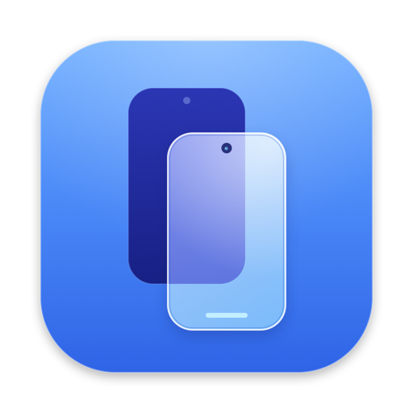

Mirror.
Your phone appears in a phone-shaped window, crisp and smooth at up to 60 frames per second, decoded by your Mac's hardware.

AirDoxx DownloadNative for macOS · Android 8+
Version 1.0 · Free · macOS 14 or later
See your phone's screen, hear its sound, get its notifications, and control it with your keyboard and trackpad. Wireless after one setup. No app needed on the phone.
Now playing on your Mac
Your phone appears in a phone-shaped window, crisp and smooth at up to 60 frames per second, decoded by your Mac's hardware.
Click to tap, drag to swipe, two-finger swipe from the edge to go back. Type with your real keyboard. Double-tap, long-press and pinch all work.
Reels, music and calls play through your Mac speakers. The phone's media keys answer to F7, F8 and F9.
Phone notifications show up as Mac notifications. Click one and AirDoxx opens that app on your phone.
Universal Clipboard works both ways, automatically. Copy a link on your phone and paste it on your Mac – or the other way round.
Pair once by scanning a QR code, or plug in once. After that AirDoxx finds your phone on Wi-Fi by itself.
Your phone's alerts, in macOS Notification Center.
Volume, brightness, media and F4 search go to the phone.
A clean 90° turn – no window morphing.
Keep the phone dark (Mac only) or show both.
Copy on one, paste on the other – automatically, both directions. Text, links, codes.
Drop a photo to save it to Downloads, drop an APK to install it.
Pause any time, or disconnect permanently to forget the phone.
Phone screen wakes for your fingerprint, or type the PIN from your Mac.
Hover the window for the toolbar. Tap an app, rotate, or switch screens.
Free · Universal (Apple silicon & Intel) · macOS 14 Sonoma or later
⬇ Download AirDoxx.dmgAirDoxx.dmg and drag AirDoxx into Applications.Needs an Android phone with Android 8+ (sound on the Mac needs Android 11+, QR pairing needs Android 11+). Nothing to install on the phone.
You do this once. Then AirDoxx just connects.
On your phone open Settings › About phone and tap Build number seven times. (On Xiaomi: About phone › OS version.) Enter your PIN if asked.
Go to Settings › Developer options and switch on USB debugging. On Xiaomi / Redmi / POCO, also switch on USB debugging (Security settings) – otherwise taps and keys won't reach the phone.
Download AirDoxx.dmg, drag it into Applications and open it (first time: System Settings › Privacy & Security › Open Anyway). Everything it needs is built in.
The welcome screen asks for the two Mac permissions right there – Keyboard & Control Keys and Notifications. No digging through System Settings.
brew install --cask android-platform-tools
brew install scrcpy
git clone https://github.com/shanmuckh/AirDox.git
cd AirDox && ./scripts/build_app.sh --installWith a cable: plug the phone in and tap Allow (tick “Always allow”). AirDoxx moves to Wi-Fi so you can unplug.
Or over Wi-Fi (Android 11+): on the phone open Developer options › Wireless debugging › Pair device with QR code and scan the code AirDoxx shows.
From then on it reconnects by itself whenever both are on the same Wi-Fi.
Press them on your keyboard – they light up.
No. AirDoxx uses Android's built-in developer connection. Its small helper runs on the phone only while you mirror and leaves nothing behind.
Capturing the screen and simulating touches from a computer is only allowed through Android's debugging interface. It's the same mechanism Android Studio uses.
No. Once paired, AirDoxx reconnects by itself on the same Wi-Fi. If your phone restarts and Wireless debugging is off, turn it on (or plug in once) and AirDoxx picks it up.
Payment and banking apps mark their screens as secure, and Android hides them from every kind of screen capture on purpose. AirDoxx tells you and switches the phone screen on so you can finish there.
That's because AirDoxx isn't notarized by Apple yet. Open it once, click Done, then go to System Settings › Privacy & Security and click Open Anyway. You only do this once. The full source is on GitHub.
Everything stays between your phone and your Mac on your own network. Nothing is uploaded anywhere.